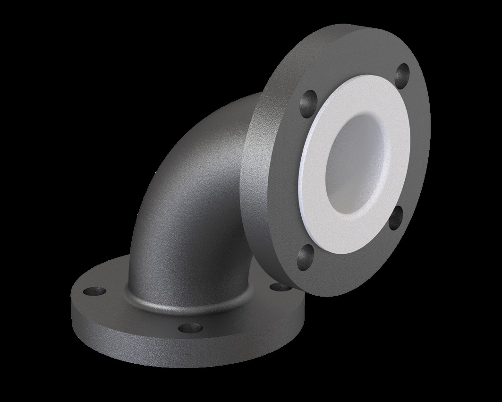

Complete manufacturing capability for fluoropolymer lined components — the lining is accomplished by a state-of-the-art paste extruding process across a facility covering CAD design, machining, liner extrusion/injection, fabrication and quality testing.
From CAD design to dispatch, under one roof.


Isometric and component drawings developed with our engineering team to establish the fitting list for your line.
Steel bodies, flanges and bends machined to the dimensions required for lining.
Fluoropolymer liners applied by a state-of-the-art paste extruding process.
Welded and cast components fabricated to ANSI/ASME B16.5 and B16.10/B16.9 standards.
Sand-blasted steel coated with a zinc epoxy primer (min. 60μm) per S.A 2.5 cleanliness standard.
Dimensional, spark and hydrostatic/pneumatic pressure testing before dispatch.
Vent holes are drilled in the steel parts of lined fittings to prevent back pressure between the metal housing and the liner, allow leak detection at pressure testing, and identify corrosion signs early. Spools under 500mm carry a single 3mm vent hole; spools over 500mm carry two, spaced ~150mm from each end.
Electrical continuity for lined components is established via conductors attached to earthing lugs — welded centrally for fittings/spools under 500mm, or ~150mm from the rear of each flange for spools over 500mm. Type A or B earthing lugs (SS 304/316 standard) are available on request.
Our engineering team can help construct isometric drawings and a complete component list.